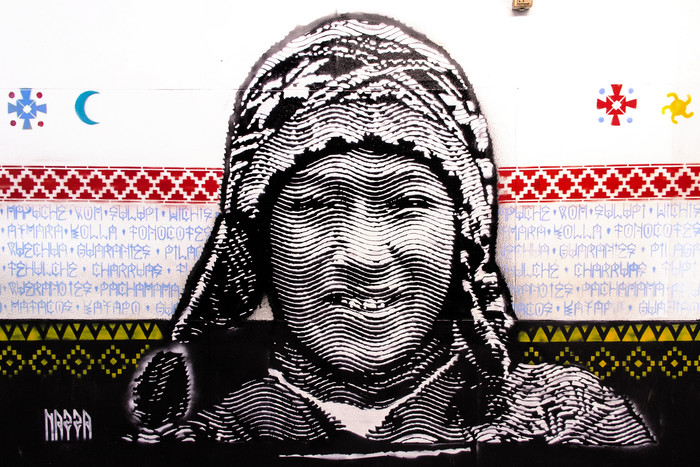
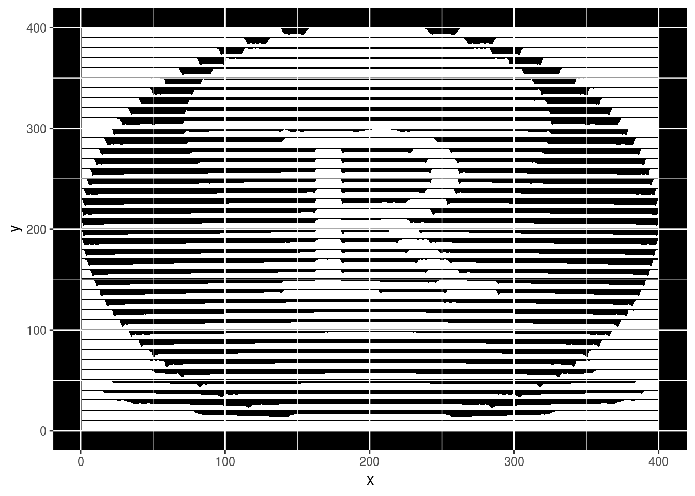
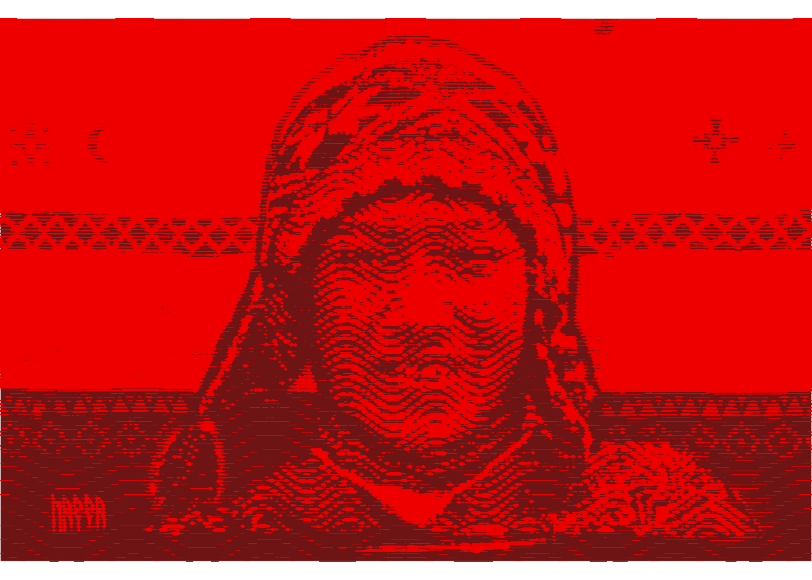

Arte reproducible del Subte de Buenos Aires
El sábado pasado estábamos en el subte con mi novia y pasamos por la estación Ángel Gallardo de la Línea B y notamos que tenía unas ilustraciones en las paredes hechas a partir de líneas de distinto grosor.

Charlamos un poco sobre ese estilo y cómo se podía replicar con ggplot2 usando el paquete ggridges.
Lo primero que hago es leer la imagen. Este paso depende del formato (a menos que haya alguna forma de seleccionar el formato correcto automáticamente, pero no conozco). La función readJPEG del paquete jpeg convierte una imagen en un array:
im <- jpeg::readJPEG("../../static/images/example.jpg")
str(im)
## num [1:400, 1:400, 1:3] 1 1 1 1 1 1 1 1 1 1 ...
La imagen es de 400x400 y tiene 3 canales (rojo, verde y azul). Lo que voy a hacer es pasarla a escala de grises y luego transformar los datos en un data.frame para poder graficarlo con ggplot2. El “algoritmo” que uso acá para pasar de color a grises es simplemente sumar la intensidad de cada color y luego dividir por 3. No sé si es la manera más correcta, pero funciona. Notar que al nombrar las dimensiones del array, revierto el orden de las coordenadas y con rev.
im <- apply(im, c(1, 2), sum) # para cada valor de las primeras 2 dimensiones, suma
im <- im/3
ys <- nrow(im)
xs <- ncol(im)
dimnames(im) <- list(y = rev(seq_len(nrow(im))), x = seq_len(ncol(im)))
im <- reshape2::melt(im)
str(im)
## 'data.frame': 160000 obs. of 3 variables:
## $ y : int 400 399 398 397 396 395 394 393 392 391 ...
## $ x : int 1 1 1 1 1 1 1 1 1 1 ...
## $ value: num 1 1 1 1 1 1 1 1 1 1 ...
Ahora que tengo un lindo data.frame, puedo graficarlo. La idea es, para cada línea horizontal (es decir, cada valor de y), graficar un área blanca cuya altura sea proporcional al valor de gris. Además, sólo voy a graficar cada 10 líneas para bajar un poco la resolución y se note más el efecto.
library(ggplot2)
library(ggridges)
plotim <- subset(im, y %in% seq(1, ys, by = 10))
ggplot(plotim, aes(x, y)) +
geom_ridgeline(aes(height = value*9, group = y),
fill = "white", color = NA) +
theme(panel.background = element_rect(fill = "black"))

Le falta pulir algunas cosas, pero va bien!
La imagen del subte que quiero reproducir en realidad no usa líneas rectas sino sinusoidales. No estoy seguro si eso se puede reproducir con geom_ridgeline() pero a esta altura decidí meterme con un geom de más bajo nivel. Usando geom_ribbon() puedo poner directamente cuál es el máximo y el mínimo del área, entonces puedo meter un coseno con la amplitud, período y fase que quiera. Además, como esto es Arte™, conviene sacar las leyendas y los ejes.
scale <- 10
per <- 6
phase <- 0.001
ampl <- scale/5
forecolor <- "white"
backcolor <- "#110C0E"
ggplot(subset(im, y %in% seq(1, ys, by = scale - 1)), aes(x)) +
geom_ribbon(aes(ymin = y + ampl*cos(x/max(x)*2*pi*per - phase*y) - value*scale/2,
ymax = y + ampl*cos(x/max(x)*2*pi*per - phase*y) + value*scale/2,
group = y), fill = forecolor) +
scale_x_continuous(expand = c(0, 0)) +
scale_y_continuous(expand = c(0, 0)) +
coord_equal() +
theme_void() +
theme(plot.background = element_rect(fill = backcolor))
Sólo para que sea más divertido, acá abajo está el código completo, armado en una función y que además permite hacer un efecto medio warholiano si se usan los 3 colores en vez de una escala de grises.
Ridgefy <- function(file, scale = 10, ampl = 1/5, per = 6, phase = 0,
forecolor = "white", backcolor = "black", ncol = 3) {
im <- jpeg::readJPEG(file)
ys <- nrow(im)
xs <- ncol(im)
if (length(forecolor) == 3) {
dimnames(im) <- list(y = rev(seq_len(ys)),
x = seq_len(xs),
forecolor = forecolor)
im <- reshape2::melt(im)
} else {
im <- apply(im, c(1, 2), sum)
im <- im/max(im)
dimnames(im) <- list(y = rev(seq_len(ys)),
x = seq_len(xs))
im <- reshape2::melt(im)
im$forecolor = forecolor
}
ampl <- scale*ampl
ggplot(subset(im, y %in% seq(1, ys, by = scale - 1)), aes(x)) +
geom_ribbon(aes(ymin = y + ampl*cos(x/max(x)*2*pi*per - phase*y) - value*scale/2,
ymax = y + ampl*cos(x/max(x)*2*pi*per - phase*y) + value*scale/2,
group = y,
fill = forecolor)) +
scale_fill_manual(values = forecolor, guide = FALSE) +
scale_x_continuous(expand = c(0, 0)) +
scale_y_continuous(expand = c(0, 0)) +
coord_equal() +
theme_void() +
facet_wrap(~forecolor, ncol = ncol) +
theme(plot.background = element_rect(fill = backcolor),
panel.spacing = unit(0, "lines"),
strip.text = element_blank(),
strip.background = element_blank())
}
Para terminar, por qué no hacer una imagen bien meta y usar este estilo para transformar la imagen original que me dio la idea.
Ridgefy("../../static/images/subte.jpg", scale = 4, ampl = 0.1,
forecolor = "#EE0000",
backcolor = "#6E1414")
